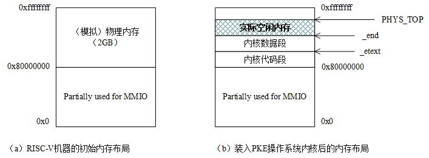
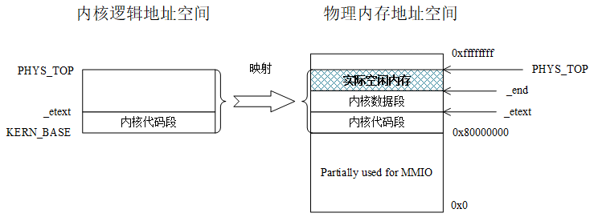
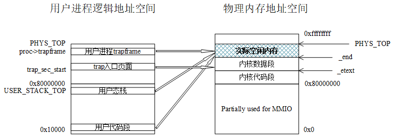

第四章．实验2：内存管理
目录
- 4.1 实验2的基础知识
- 4.1.1 Sv39虚地址管理方案回顾
- 4.1.2 物理内存布局与规划
- 4.1.3 PKE操作系统和应用进程的逻辑地址空间结构
- 4.1.4 与页表操作相关的重要函数
- 4.2 lab2_1 虚实地址转换
- 给定应用
- 实验内容
- 实验指导
- 4.3 lab2_2 简单内存分配和回收
- 给定应用
- 实验内容
- 实验指导
- 4.4 lab2_3 缺页异常
- 给定应用
- 实验内容
- 实验指导
- 4.5 lab2_challenge1 复杂缺页异常（难度：★☆☆☆☆）
- 给定应用
- 实验内容
- 给定应用
- 实验内容
- 实验指导
4.1 实验2的基础知识
在过去的第一组实验(lab1)中，为了简化设计，我们采用了Bare模式来完成虚拟地址到物理地址的转换（实际上，就是不转换，认为：虚拟地址=物理地址），也未开启（模拟）RISC-V机器的分页功能。在本组实验（实验2）中，我们将开启和使用Sv39页式虚拟内存管理，无论是操作系统内核还是应用，都通过页表来实现逻辑地址到物理地址的转换。
实际上，我们在本书的第一章的1.5节曾介绍过RISC-V的Sv39页式虚拟内存的管理方式，在本章，我们将尽量结合PKE的实验代码讲解RISC-V的Sv39虚拟内存管理机制，并通过3个基础实验加深读者对该管理机制的理解。
4.1.1 Sv39虚地址管理方案回顾
我们先回顾一下RISC-V的sv39虚地址管理方案，在该方案中，逻辑地址（就是我们的程序中各个符号，在链接时被赋予的地址）通过页表转换为其对应的物理地址。由于我们考虑的机器采用了RV64G指令集，意味着逻辑地址和物理地址理论上都是64位的。然而，对于逻辑地址，实际上我们的应用规模还用不到全部64位的寻找空间，所以Sv39方案中只使用了64位虚地址中的低39位（Sv48方案使用了低48位），意味着我们的应用程序的地址空间可以到512GB；对于物理地址，目前的RISC-V设计只用到了其中的低56位。
Sv39将39位虚拟地址“划分”为4个段（如下图所示）：
- [38,30]：共9位，图中的VPN[2]，用于在512（2^9）个页目录（page directory）项中检索页目录项（page directory entry, PDE）；
- [29,21]：共9位，图中的VPN[1]，用于在512（2^9）个页中间目录（page medium directory）中检索PDE；
- [20,12]：共9位，图中的VPN[0]，用于在512（2^9）个页表（page medium directory）中检索PTE；
- [11,0]：共12位，图中的offset，充当4KB页的页内位移。

图4.1 Sv39中虚拟地址到物理地址的转换过程
由于每个物理页的大小为4KB，同时，每个目录项（PDE）或页表项（PTE）占据8个字节，所以一个物理页能够容纳的PDE或PTE的数量为4KB/8B=512，这也是为什么VPN[2]=VPN[1]=VPN[0]=512的原因。
8字节的PDE或者PTE的格式如下：

图4.2 Sv39中PDE/PTE格式
其中的各个位的含意为：
● V（Valid）位决定了该PDE/PTE是否有效（V=1时有效），即是否有对应的实页。
● R（Read）、W（Write）和X（eXecutable）位分别表示此页对应的实页是否可读、可写和可执行。这3个位只对PTE有意义，对于PDE而言这3个位都为0。
● U（User）位表示该页是不是一个用户模式页。如果U=1，表示用户模式下的代码可以访问该页，否则就表示不能访问。S模式下的代码对U=1页面的访问取决于sstatus寄存器中的SUM字段取值。
● G（Global）位表示该PDE/PTE是不是全局的。我们可以把操作系统中运行的一个进程，认为是一个独立的地址空间，有时会希望某个虚地址空间转换可以在一组进程中共享，这种情况下，就可以将某个PDE的G位设置为1，达到这种共享的效果。
● A（Access）位表示该页是否被访问过。
● D（Dirty）位表示该页的内容是否被修改。
● RSW位（2位）是保留位，一般由运行在S模式的代码（如操作系统）来使用。
● PPN（44位）是物理页号（Physical Page Number，简写为PPN）。
其中PPN为44位的原因是：对于物理地址，现有的RISC-V规范只用了其中的56位，同时，这56位中的低12位为页内位移。所以，PPN的长度=56-12=44（位）。
4.1.2 物理内存布局与规划
PKE实验用到的RISC-V机器，实际上是spike模拟出来的，例如，采用以下命令：
spike将创建一个模拟的RISC-V机器，该机器拥有一个支持RV64G指令集的处理器，2GB的（模拟）物理内存。实际上，我们可以通过在spike命令行中使用-m开关指定模拟机器的物理内存大小，如使用-m512即可获得拥有512MB物理内存的模拟机器。默认的（2GB物理内存）配置等效于-m2048，在之后对模拟RISC-V机器物理内存布局的讨论中，我们将只考虑默认配置以简化论述。另外，也可以在spike命令行中使用-p开关指定模拟机器中处理器的个数，这样就可以模拟出一个多核的RISC-V平台了。
需要注意的是，对于我们的模拟RISC-V机器而言，2GB的物理内存并不是从0地址开始编址，而是从0x80000000（见kernel/memlayout.h文件中的DRAM_BASE宏定义）开始编址的。这样做的理由是，部分低物理地址[0x0, 0x80000000]并无物理内存与之对应，该空间留作了MMIO的用途。例如，我们在lab1_3中遇到的CLINT（Core Local Interrupter，timer中断的产生就是通过往这个地址写数据控制的），见kernel/riscv.h文件中的CLINT定义，的地址是0x2000000，就位于这一空间。从0x80000000开始对物理内存进行编址的好处是，避免类似x86平台那样产生内存空洞（memory hole，如640KB~1MB的BIOS空间），从而导致内存的浪费和管理上的复杂性。
我们的代理内核（构造出来的./obj/riscv-pke文件）的逻辑地址也是从0x80000000开始的，见kernel/kernel.lds文件中的内容，spike将代理内核载入（模拟）物理内存时，也是将该代理内核的代码段、数据段载入到0x80000000开始的内存空间，如图4.3所示。

图4.3 初始内存布局和载入操作系统内核后的内存布局
这样，操作系统内核的逻辑地址和物理地址就有了一一对应的关系，这也是我们在lab1中采用直模式（Bare mode）虚拟地址翻译机制也不会出错的原因。这里，需要解释的是对内核的机器模式栈的处理。通过实验一，我们知道机器模式栈是一个4KB的空间，它位于内核数据段，而不是专门分配一个额外的页面。这样（简单）处理的原因是PKE上运行的应用往往只有一个，算是非常简单的多任务环境，且操作系统利用机器模式栈的时机只有特殊的异常（如lab1_2中的非法指令异常）以及一些外部中断（如lab1_3中的时钟中断）。
如图4.3(b)所示，在spike将操作系统内核装入物理内存后，剩余的内存空间应该是从内核数据段的结束（_end符号）到0xffffffff（即4GB-1的地址）。但是由于PKE操作系统内核的特殊性（它只需要支持给定应用的运行），lab2的代码将操作系统管理的空间进一步缩减，定义了一个操作系统需要管理的最大内存空间（kernel/config.h文件），从而提升实验代码的执行速度：
10 // the maximum memory space that PKE is allowed to manage. added @lab2_1
11 #define PKE_MAX_ALLOWABLE_RAM 128 * 1024 * 1024
12
13 // the ending physical address that PKE observes. added @lab2_1
14 #define PHYS_TOP (DRAM_BASE + PKE_MAX_ALLOWABLE_RAM)
可以看到，实验代码“人为”地将PKE操作系统所能管理的内存空间限制到了128MB（即PKE_MAX_ALLOWABLE_RAM的定义），同时，定义了PHYS_TOP为新的内存物理地址上限。实际上，kernel/pmm.c文件所定义的pmm_init()函数包含了PKE对物理内存进行管理的逻辑：
63 void pmm_init() {
64 // start of kernel program segment
65 uint64 g_kernel_start = KERN_BASE;
66 uint64 g_kernel_end = (uint64)&_end;
67
68 uint64 pke_kernel_size = g_kernel_end - g_kernel_start;
69 sprint("PKE kernel start 0x%lx, PKE kernel end: 0x%lx, PKE kernel size: 0x%lx .\n",
70 g_kernel_start, g_kernel_end, pke_kernel_size);
71
72 // free memory starts from the end of PKE kernel and must be page-aligined
73 free_mem_start_addr = ROUNDUP(g_kernel_end , PGSIZE);
74
75 // recompute g_mem_size to limit the physical memory space that our riscv-pke kernel
76 // needs to manage
77 g_mem_size = MIN(PKE_MAX_ALLOWABLE_RAM, g_mem_size);
78 if( g_mem_size < pke_kernel_size )
79 panic( "Error when recomputing physical memory size (g_mem_size).\n" );
80
81 free_mem_end_addr = g_mem_size + DRAM_BASE;
82 sprint("free physical memory address: [0x%lx, 0x%lx] \n", free_mem_start_addr,
83 free_mem_end_addr - 1);
84
85 sprint("kernel memory manager is initializing ...\n");
86 // create the list of free pages
87 create_freepage_list(free_mem_start_addr, free_mem_end_addr);
88 }
在76行，pmm_init()函数会计算g_mem_size，其值在PKE_MAX_ALLOWABLE_RAM和spike所模拟的物理内存大小中取最小值，也就是说除非spike命令行参数中-m参数后面所带的数字小于128（即128M），g_mem_size的大小将为128MB。
另外，为了对空闲物理内存（地址范围为[_end，g_mem_size+DRAM_BASE(即PHYS_TOP)]）进行有效管理，pmm_init()函数在86行通过调用create_freepage_list()函数定义了一个链表，用于对空闲物理内存的分配和回收。kernel/pmm.c文件中包含了所有对物理内存的初始化、分配和回收的例程，它们的实现非常的简单，感兴趣的读者请对里面的函数进行阅读理解。
4.1.3 PKE操作系统和应用进程的逻辑地址空间结构
通过4.1.2的讨论，我们知道对于PKE内核来说，有逻辑地址=物理地址的关系成立，这也是在实验一中我们可以采用Bare模式进行地址映射的原因。采用Bare模式的地址映射，在进行内存访问时，无需经过页表和硬件进行逻辑地址到物理地址的转换。然而，在实验二中我们将采用Sv39虚拟地址管理方案，通过页表和硬件（spike模拟的MMU）进行访存地址的转换。为实现这种转换，首先需要确定的就是将要被转换的逻辑地址空间，即需要对哪部分逻辑地址空间进行转换的问题。在PKE的实验二中，存在两个需要被转换的实体，一个是操作系统内核，另一个是我们的实验给定的应用程序所对应的进程。下面我们对它们分别讨论：
操作系统内核
操作系统内核的逻辑地址与物理地址存在一一对应的关系，但是在开启了Sv39虚拟内存管理方案后，所有的逻辑地址到物理地址的翻译都必须通过页表和MMU硬件进行，所以，为操作系统内核建立页表是必不可少的工作。操作系统的逻辑地址空间可以简单的认为是从内核代码段的起始（即KERN_BASE=0x80000000）到物理地址的顶端（也就是PHYS_TOP），因为操作系统是系统中拥有最高权限的软件，需要实现对所有物理内存空间的直接管理。这段逻辑地址空间，即[KERN_BASE，PHYS_TOP]，所映射的物理地址空间也是[KERN_BASE，PHYS_TOP]。也就是说对于操作系统内核，我们在实验二中通过Sv39的页表，仍然保持和实验一一样的逻辑地址到物理地址的一一对应关系。在权限方面，对于内核代码段所对应的页面来说是可读可执行，对于数据段以及空闲内存空间，其权限为可读可写。

图4.4 PKE操作系统内核的逻辑地址空间和它到物理地址空间的映射
操作系统内核建立页表的过程可以参考kernel/vmm.c文件中的kern_vm_init()函数的实现，需要说明的是kern_vm_init()函数在PKE操作系统内核的S态初始化过程（s_start函数）中被调用：
120 void kern_vm_init(void) {
121 // pagetable_t is defined in kernel/riscv.h. it's actually uint64*
122 pagetable_t t_page_dir;
123
124 // allocate a page (t_page_dir) to be the page directory for kernel. alloc_page is defined in kernel/pmm.c
125 t_page_dir = (pagetable_t)alloc_page();
126 // memset is defined in util/string.c
127 memset(t_page_dir, 0, PGSIZE);
128
129 // map virtual address [KERN_BASE, _etext] to physical address [DRAM_BASE, DRAM_BASE+(_etext - KERN_BASE)],
130 // to maintain (direct) text section kernel address mapping.
131 kern_vm_map(t_page_dir, KERN_BASE, DRAM_BASE, (uint64)_etext - KERN_BASE,
132 prot_to_type(PROT_READ | PROT_EXEC, 0));
133
134 sprint("KERN_BASE 0x%lx\n", lookup_pa(t_page_dir, KERN_BASE));
135
136 // also (direct) map remaining address space, to make them accessable from kernel.
137 // this is important when kernel needs to access the memory content of user's app
138 // without copying pages between kernel and user spaces.
139 kern_vm_map(t_page_dir, (uint64)_etext, (uint64)_etext, PHYS_TOP - (uint64)_etext,
140 prot_to_type(PROT_READ | PROT_WRITE, 0));
141
142 sprint("physical address of _etext is: 0x%lx\n", lookup_pa(t_page_dir, (uint64)_etext));
143
144 g_kernel_pagetable = t_page_dir;
145 }
我们看到，kern_vm_init()函数会首先（125行）从空闲物理内存中获取（分配）一个t_page_dir指针所指向的物理页，该页将作为内核页表的根目录（page directory，对应图4.1中的VPN[2]）。接下来，将该页的内容清零（127行）、映射代码段到它对应的物理地址（131--132行）、映射数据段的起始到PHYS_TOP到它对应的物理地址空间（139--140行），最后记录内核页表的根目录页（144行）。
应用进程
对于实验一的所有应用，我们通过指定应用程序中所有的符号地址对应的逻辑地址的方法（参见第三章的3.1.3节），将应用程序中的逻辑地址“强行”对应到图4.3中的“实际空闲内存”空间，并在ELF加载时将程序段加载到了这块内存空间中的对应位置，从而使得应用程序（所对应的进程）也可以采用类似操作系统内核那样的直映射（Bare模式）方式。然而，这样做是因为实验一中的应用都是单线程应用，它们的执行并不会产生新的执行体（如子进程），所以可以采用指定逻辑地址的办法进行简化。但是实际情况是，我们在代理内核上是有可能执行多进程应用的，特别是在开发板上验证多核RISC-V处理器的场景（我们在实验三中，也将开始讨论在PKE实验中实现和完善进程的管理）。在这种场景下，由于无法保证应用所要求的逻辑地址空间“恰好”能找到对应的物理地址空间，且后者还未被占据。
这里，我们可以观察一下在未指定逻辑地址的情况下的应用对应的逻辑地址。首先切换到lab2_1_pagetable，然后构造内核和应用：
// 切换到lab2_1_pagetable分支
$ git checkout lab2_1_pagetable
// 构造内核和应用
$ make
// 显示应用程序中将被加载的程序段
$ riscv64-unknown-elf-readelf -l ./obj/app_helloworld_no_lds
Elf file type is EXEC (Executable file)
Entry point 0x100f6
There is 1 program header, starting at offset 64
Program Headers:
Type Offset VirtAddr PhysAddr
FileSiz MemSiz Flags Align
LOAD 0x0000000000000000 0x0000000000010000 0x0000000000010000
0x0000000000000360 0x0000000000000360 R E 0x1000
Section to Segment mapping:
Segment Sections...
00 .text .rodata
通过以上结果，我们看到，lab2_1的应用app_helloworld_no_lds（实际上就是lab1_1中的app_helloworld，不同的地方在于没有用到lab1_1中的user/user.lds来约束逻辑地址）只包含一个代码段，它的起始地址为0x0000000000010000（即0x10000）。
对比4.1.2节中讨论的物理内存布局，我们知道spike模拟的RISC-V机器并无处于0x10000的物理地址空间与其对应。这样，我们就需要通过Sv39虚地址管理方案将0x10000开始的代码段，映射到app_helloworld_no_lds中代码段实际被加载到的物理内存（显然位于图4.3中的“实际内存空间”所标识的区域）区域。
PKE实验二中的应用加载是通过kernel/kernel.c文件中的load_user_program函数来完成的：
38 void load_user_program(process *proc) {
39 sprint("User application is loading.\n");
40 // allocate a page to store the trapframe. alloc_page is defined in kernel/pmm.c. added @la b2_1
41 proc->trapframe = (trapframe *)alloc_page();
42 memset(proc->trapframe, 0, sizeof(trapframe));
43
44 // allocate a page to store page directory. added @lab2_1
45 proc->pagetable = (pagetable_t)alloc_page();
46 memset((void *)proc->pagetable, 0, PGSIZE);
47
48 // allocate pages to both user-kernel stack and user app itself. added @lab2_1
49 proc->kstack = (uint64)alloc_page() + PGSIZE; //user kernel stack top
50 uint64 user_stack = (uint64)alloc_page(); //phisical address of user stack bottom
51
52 // USER_STACK_TOP = 0x7ffff000, defined in kernel/memlayout.h
53 proc->trapframe->regs.sp = USER_STACK_TOP; //virtual address of user stack top
54
55 sprint("user frame 0x%lx, user stack 0x%lx, user kstack 0x%lx \n", proc->trapframe,
56 proc->trapframe->regs.sp, proc->kstack);
57
58 // load_bincode_from_host_elf() is defined in kernel/elf.c
59 load_bincode_from_host_elf(proc);
60
61 // populate the page table of user application. added @lab2_1
62 // map user stack in userspace, user_vm_map is defined in kernel/vmm.c
63 user_vm_map((pagetable_t)proc->pagetable, USER_STACK_TOP - PGSIZE, PGSIZE, user_stack,
64 prot_to_type(PROT_WRITE | PROT_READ, 1));
65
66 // map trapframe in user space (direct mapping as in kernel space).
67 user_vm_map((pagetable_t)proc->pagetable, (uint64)proc->trapframe, PGSIZE, (uint64)proc->trapframe,
68 prot_to_type(PROT_WRITE | PROT_READ, 0));
69
70 // map S-mode trap vector section in user space (direct mapping as in kernel space)
71 // here, we assume that the size of usertrap.S is smaller than a page.
72 user_vm_map((pagetable_t)proc->pagetable, (uint64)trap_sec_start, PGSIZE, (uint64)trap_sec_start,
73 prot_to_type(PROT_READ | PROT_EXEC, 0));
74 }
load_user_program()函数对于应用进程逻辑空间的操作可以分成以下几个部分：
-
（41--42行）分配一个物理页面，将其作为栈帧（trapframe），即发生中断时保存用户进程执行上下文的内存空间。由于物理页面都是从位于物理地址范围[_end，PHYS_TOP]的空间中分配的，它的首地址也将位于该区间。所以第67--68行的映射，也是做一个proc->trapframe到所分配页面的直映射（逻辑地址=物理地址）。
-
（45--46行）分配一个物理页面作为存放进程页表根目录（page directory，对应图4.1中的VPN[2]）的空间。
-
（49行）分配了一个物理页面，作为用户进程的内核态栈，该栈将在用户进程进入中断处理时用作S模式内核处理函数使用的栈。然而，这个栈并未映射到用户进程的逻辑地址空间，而是将其首地址保存在proc->kstack中。
-
（50--53行）再次分配一个物理页面，作为用户进程的用户态栈，该栈供应用在用户模式下使用，并在第63--64行映射到用户进程的逻辑地址USER_STACK_TOP。
- （59行）调用load_bincode_from_host_elf()函数，该函数将读取应用所对应的ELF文件，并将其中的代码段读取到新分配的内存空间（物理地址位于[_end，PHYS_TOP]区间）。
- （72--73行）将内核中的S态trap入口函数所在的物理页一一映射到用户进程的逻辑地址空间。
通过以上load_user_program()函数，我们可以大致画出用户进程的逻辑地址空间，以及该地址空间到物理地址空间的映射。

图4.5 用户进程的逻辑地址空间和到物理地址空间的映射
我们看到，用户进程在装入后，其逻辑地址空间有4个区间建立了和物理地址空间的映射。从上往下观察，“用户进程trapframe”和“trap入口页面”的逻辑地址大于0x80000000，且与承载它们的物理空间建立了一对一的映射关系。另外两个区间，即“用户态栈”和“用户代码段”的逻辑地址都低于0x80000000，它们所对应的物理空间则都位于实际空闲内存区域，同时，这种映射的逻辑地址显然不等于物理地址。
4.1.4 与页表操作相关的重要函数
实验二与页表操作相关的函数都放在kernel/vmm.c文件中，其中比较重要的函数有：
- int map_pages(pagetable_t page_dir, uint64 va, uint64 size, uint64 pa, int perm);
该函数的第一个输入参数page_dir为根目录所在物理页面的首地址，第二个参数va则是将要被映射的逻辑地址，第三个参数size为所要建立映射的区间的长度，第四个参数pa为逻辑地址va所要被映射到的物理地址首地址，最后（第五个）的参数perm为映射建立后页面访问的权限。
总的来说，该函数将在给定的page_dir所指向的根目录中，建立[va，va+size]到[pa，pa+size]的映射。
- pte_t *page_walk(pagetable_t page_dir, uint64 va, int alloc);
该函数的第一个输入参数page_dir为根目录所在物理页面的首地址，第二个参数va为所要查找（walk）的逻辑地址，第三个参数实际上是一个bool类型：当它为1时，如果它所要查找的逻辑地址并未建立与物理地址的映射（图4.1中的Page Medium Directory）不存在，则通过分配内存空间建立从根目录到页表的完整映射，并最终返回va所对应的页表项；当它为0时，如果它所要查找的逻辑地址并未建立与物理地址的映射，则返回NULL，否则返回va所对应的页表项。
- uint64 lookup_pa(pagetable_t pagetable, uint64 va);
查找逻辑地址va所在虚拟页面地址（即va将低12位置零）对应的物理页面地址。如果没有与va对应的物理页面，则返回NULL；否则，返回va对应的物理页面地址。
4.2 lab2_1 虚实地址转换
给定应用
- user/app_helloworld_no_lds.c
1 /*
2 * Below is the given application for lab2_1.
3 * This app runs in its own address space, in contrast with in direct mapping.
4 */
5
6 #include "user_lib.h"
7 #include "util/types.h"
8
9 int main(void) {
10 printu("Hello world!\n");
11 exit(0);
12 }
该应用的代码跟lab1_1是一样的。但是，不同的地方在于，它的编译和链接并未指定程序中符号的逻辑地址。
- （先提交lab1_3的答案，然后）切换到lab2_1，继承lab1_3中所做的修改，并make后的直接运行结果：
//切换到lab2_1
$ git checkout lab2_1_pagetable
//继承lab1_3以及之前的答案
$ git merge lab1_3_irq -m "continue to work on lab2_1"
//重新构造
$ make clean; make
//运行构造结果
$ spike ./obj/riscv-pke ./obj/app_helloworld_no_lds
In m_start, hartid:0
HTIF is available!
(Emulated) memory size: 2048 MB
Enter supervisor mode...
PKE kernel start 0x0000000080000000, PKE kernel end: 0x000000008000e000, PKE kernel size: 0x000000000000e000 .
free physical memory address: [0x000000008000e000, 0x0000000087ffffff]
kernel memory manager is initializing ...
KERN_BASE 0x0000000080000000
physical address of _etext is: 0x0000000080004000
kernel page table is on
User application is loading.
user frame 0x0000000087fbc000, user stack 0x000000007ffff000, user kstack 0x0000000087fbb000
Application: ./obj/app_helloworld_no_lds
Application program entry point (virtual address): 0x00000000000100f6
Switching to user mode...
You have to implement user_va_to_pa (convert user va to pa) to print messages in lab2_1.
System is shutting down with exit code -1.
从以上运行结果来看，我们的应用app_helloworld_no_lds并未如愿地打印出“Hello world!\n”，这是因为user/app_helloworld_no_lds.c的第10行printu("Hello world!\n");中的“Hello world!\n”字符串本质上是存储在.rodata段，它被和代码段（.text）一起被装入内存。从逻辑地址结构来看，它的逻辑地址就应该位于图4.5中的“用户代码段”，显然低于0x80000000。
而printu是一个典型的系统调用（参考lab1_1的内容），它的执行逻辑是通过ecall指令，陷入到内核（S模式）完成到屏幕的输出。然而，对于内核而言，显然不能继续使用“Hello world!\n”的逻辑地址对它进行访问，而必须将其转换成物理地址（因为如图4.4所示，操作系统内核已建立了到“实际空闲内存”的直映射）。而lab2_1的代码，显然未实现这种转换。
实验内容
实现user_va_to_pa()函数，完成给定逻辑地址到物理地址的转换，并获得以下预期结果：
$ spike ./obj/riscv-pke ./obj/app_helloworld_no_lds
In m_start, hartid:0
HTIF is available!
(Emulated) memory size: 2048 MB
Enter supervisor mode...
PKE kernel start 0x0000000080000000, PKE kernel end: 0x000000008000e000, PKE kernel size: 0x000000000000e000 .
free physical memory address: [0x000000008000e000, 0x0000000087ffffff]
kernel memory manager is initializing ...
KERN_BASE 0x0000000080000000
physical address of _etext is: 0x0000000080004000
kernel page table is on
User application is loading.
user frame 0x0000000087fbc000, user stack 0x000000007ffff000, user kstack 0x0000000087fbb000
Application: ./obj/app_helloworld_no_lds
Application program entry point (virtual address): 0x00000000000100f6
Switching to user mode...
Hello world!
User exit with code:0.
System is shutting down with exit code 0.
实验指导
读者可以参考lab1_1的内容，重走从应用的printu到S态的系统调用的完整路径，最终来到kernel/syscall.c文件的sys_user_print()函数：
21 ssize_t sys_user_print(const char* buf, size_t n) {
22 //buf is an address in user space on user stack,
23 //so we have to transfer it into phisical address (kernel is running in direct mapping).
24 assert( current );
25 char* pa = (char*)user_va_to_pa((pagetable_t)(current->pagetable), (void*)buf);
26 sprint(pa);
27 return 0;
28 }
该函数最终在第26行通过调用sprint将结果输出，但是在输出前，需要将buf地址转换为物理地址传递给sprint，这一转换是通过user_va_to_pa()函数完成的。而user_va_to_pa()函数的定义在kernel/vmm.c文件中定义：
150 void *user_va_to_pa(pagetable_t page_dir, void *va) {
151 // TODO (lab2_1): implement user_va_to_pa to convert a given user virtual address "va"
152 // to its corresponding physical address, i.e., "pa". To do it, we need to walk
153 // through the page table, starting from its directory "page_dir", to locate the PTE
154 // that maps "va". If found, returns the "pa" by using:
155 // pa = PYHS_ADDR(PTE) + (va - va & (1<<PGSHIFT -1))
156 // Here, PYHS_ADDR() means retrieving the starting address (4KB aligned), and
157 // (va - va & (1<<PGSHIFT -1)) means computing the offset of "va" in its page.
158 // Also, it is possible that "va" is not mapped at all. in such case, we can find
159 // invalid PTE, and should return NULL.
160 panic( "You have to implement user_va_to_pa (convert user va to pa) to print messages in lab2_1.\n" );
161
162 }
如注释中的提示，为了在page_dir所指向的页表中查找逻辑地址va，就必须通过调用页表操作相关函数找到包含va的页表项（PTE），通过该PTE的内容得知va所在的物理页面的首地址，最后再通过计算va在页内的位移得到va最终对应的物理地址。
实验完毕后，记得提交修改（命令行中-m后的字符串可自行确定），以便在后续实验中继承lab2_1中所做的工作：
4.3 lab2_2 简单内存分配和回收
给定应用
- user/app_naive_malloc.c
1 /*
2 * Below is the given application for lab2_2.
3 */
4
5 #include "user_lib.h"
6 #include "util/types.h"
7
8 struct my_structure {
9 char c;
10 int n;
11 };
12
13 int main(void) {
14 struct my_structure* s = (struct my_structure*)naive_malloc();
15 s->c = 'a';
16 s->n = 1;
17
18 printu("s: %lx, {%c %d}\n", s, s->c, s->n);
19
20 naive_free(s);
21
22 exit(0);
23 }
该应用的逻辑非常简单：首先分配一个空间（内存页面）来存放my_structure结构，往my_structure结构的实例中存储信息，打印信息，并最终将之前所分配的空间释放掉。这里，新定义了两个用户态函数naive_malloc()和naive_free()，它们最终会转换成系统调用，完成内存的分配和回收操作。
- （先提交lab2_1的答案，然后）切换到lab2_2，继承lab2_1以及之前实验所做的修改，并make后的直接运行结果：
//切换到lab2_2
$ git checkout lab2_2_allocatepage
//继承lab2_1以及之前的答案
$ git merge lab2_1_pagetable -m "continue to work on lab2_2"
//重新构造
$ make clean; make
//运行构造结果
$ spike ./obj/riscv-pke ./obj/app_naive_malloc
In m_start, hartid:0
HTIF is available!
(Emulated) memory size: 2048 MB
Enter supervisor mode...
PKE kernel start 0x0000000080000000, PKE kernel end: 0x000000008000e000, PKE kernel size: 0x000000000000e000 .
free physical memory address: [0x000000008000e000, 0x0000000087ffffff]
kernel memory manager is initializing ...
KERN_BASE 0x0000000080000000
physical address of _etext is: 0x0000000080004000
kernel page table is on
User application is loading.
user frame 0x0000000087fbc000, user stack 0x000000007ffff000, user kstack 0x0000000087fbb000
Application: ./obj/app_naive_malloc
Application program entry point (virtual address): 0x0000000000010078
Switching to user mode...
s: 0000000000400000, {a 1}
You have to implement user_vm_unmap to free pages using naive_free in lab2_2.
System is shutting down with exit code -1.
从输出结果来看，s: 0000000000400000, {a 1}的输出说明分配内存已经做好（也就是说naive_malloc函数及其内核功能的实现已完成），且打印出了我们预期的结果。但是，naive_free对应的功能并未完全做好。
实验内容
如输出提示所表明的那样，需要完成naive_free对应的功能，并获得以下预期的结果输出：
$ spike ./obj/riscv-pke ./obj/app_naive_malloc
In m_start, hartid:0
HTIF is available!
(Emulated) memory size: 2048 MB
Enter supervisor mode...
PKE kernel start 0x0000000080000000, PKE kernel end: 0x000000008000e000, PKE kernel size: 0x000000000000e000 .
free physical memory address: [0x000000008000e000, 0x0000000087ffffff]
kernel memory manager is initializing ...
KERN_BASE 0x0000000080000000
physical address of _etext is: 0x0000000080004000
kernel page table is on
User application is loading.
user frame 0x0000000087fbc000, user stack 0x000000007ffff000, user kstack 0x0000000087fbb000
Application: ./obj/app_naive_malloc
Application program entry point (virtual address): 0x0000000000010078
Switching to user mode...
s: 0000000000400000, {a 1}
User exit with code:0.
System is shutting down with exit code 0.
实验指导
一般来说，应用程序执行过程中的动态内存分配和回收，是操作系统中的堆（Heap）管理的内容。在本实验中，我们实际上是为PKE操作系统内核实现一个简单到不能再简单的“堆”。为实现naive_free()的内存回收过程，我们需要了解其对偶过程，即内存是如何“分配”给应用程序，并供后者使用的。为此，我们先阅读kernel/syscall.c文件中的naive_malloc()函数的底层实现，sys_user_allocate_page()：
42 uint64 sys_user_allocate_page() {
43 void* pa = alloc_page();
44 uint64 va = g_ufree_page;
45 g_ufree_page += PGSIZE;
46 user_vm_map((pagetable_t)current->pagetable, va, PGSIZE, (uint64)pa,
47 prot_to_type(PROT_WRITE | PROT_READ, 1));
48
49 return va;
50 }
这个函数在43行分配了一个首地址为pa的物理页面，这个物理页面要以何种方式映射给应用进程使用呢？第44行给出了pa对应的逻辑地址va = g_ufree_page，并在45行对g_ufree_page进行了递增操作。最后在46--47行，将pa映射给了va地址。这个过程中，g_ufree_page是如何定义的呢？我们可以找到它在kernel/process.c文件中的定义：
27 // points to the first free page in our simple heap. added @lab2_2
28 uint64 g_ufree_page = USER_FREE_ADDRESS_START;
而USER_FREE_ADDRESS_START的定义在kernel/memlayout.h文件：
17 // start virtual address (4MB) of our simple heap. added @lab2_2
18 #define USER_FREE_ADDRESS_START 0x00000000 + PGSIZE * 1024
可以看到，在我们的PKE操作系统内核中，应用程序执行过程中所动态分配（类似malloc）的内存是被映射到USER_FREE_ADDRESS_START（4MB）开始的地址的。那么，这里的USER_FREE_ADDRESS_START对应图4.5中的用户进程的逻辑地址空间的哪个部分呢？这一点请读者自行判断，并分析为什么是4MB，以及能不能用其他的逻辑地址？
以上了解了内存的分配过程后，我们就能够大概了解其反过程的回收应该怎么做了，大概分为以下步骤：
- 找到一个给定va所对应的页表项PTE（查找4.1.4节，看哪个函数能满足此需求）；
- 如果找到（过滤找不到的情形），通过该PTE的内容得知va所对应物理页的首地址pa；
- 回收pa对应的物理页，并将PTE中的Valid位置为0。
本实验若出现M模式的非法异常unexpected exception happened in M-mode.，说明naive_malloc对应的系统调用未返回正确的逻辑地址。解决问题的方法是，回头检查你在lab1_1中所做的答案！：
实验完毕后，记得提交修改（命令行中-m后的字符串可自行确定），以便在后续实验中继承lab2_2中所做的工作：
4.4 lab2_3 缺页异常
给定应用
- user/app_sum_sequence.c
1 /*
2 * The application of lab2_3.
3 */
4
5 #include "user_lib.h"
6 #include "util/types.h"
7
8 //
9 // compute the summation of an arithmetic sequence. for a given "n", compute
10 // result = n + (n-1) + (n-2) + ... + 0
11 // sum_sequence() calls itself recursively till 0. The recursive call, however,
12 // may consume more memory (from stack) than a physical 4KB page, leading to a page fault.
13 // PKE kernel needs to improved to handle such page fault by expanding the stack.
14 //
15 uint64 sum_sequence(uint64 n) {
16 if (n == 0)
17 return 0;
18 else
19 return sum_sequence( n-1 ) + n;
20 }
21
22 int main(void) {
23 // we need a large enough "n" to trigger pagefaults in the user stack
24 uint64 n = 1000;
25
26 printu("Summation of an arithmetic sequence from 0 to %ld is: %ld \n", n, sum_sequence(1000) );
27 exit(0);
28 }
给定一个递增的等差数列：0, 1, 2, ..., n，如何求该数列的和？以上的应用给出了它的递归（recursive）解法。通过定义一个函数sum_sequence(n)，将求和问题转换为sum_sequence(n-1) + n的问题。问题中n依次递减，直至为0时令sum_sequence(0)=0。
- （先提交lab2_2的答案，然后）切换到lab2_3、继承lab2_2及以前所做修改，并make后的直接运行结果：
//切换到lab2_3
$ git checkout lab2_3_pagefault
//继承lab2_2以及之前的答案
$ git merge lab2_2_allocatepage -m "continue to work on lab2_3"
//重新构造
$ make clean; make
//运行构造结果
$ spike ./obj/riscv-pke ./obj/app_sum_sequence
In m_start, hartid:0
HTIF is available!
(Emulated) memory size: 2048 MB
Enter supervisor mode...
PKE kernel start 0x0000000080000000, PKE kernel end: 0x000000008000e000, PKE kernel size: 0x000000000000e000 .
free physical memory address: [0x000000008000e000, 0x0000000087ffffff]
kernel memory manager is initializing ...
KERN_BASE 0x0000000080000000
physical address of _etext is: 0x0000000080004000
kernel page table is on
User application is loading.
user frame 0x0000000087fbc000, user stack 0x000000007ffff000, user kstack 0x0000000087fbb000
Application: ./obj/app_sum_sequence
Application program entry point (virtual address): 0x0000000000010096
Switching to user mode...
handle_page_fault: 000000007fffdff8
You need to implement the operations that actually handle the page fault in lab2_3.
System is shutting down with exit code -1.
以上执行结果，为什么会出现handle_page_fault呢？这就跟我们给出的应用程序（递归求解等差数列的和）有关了。
递归解法的特点是，函数调用的路径会被完整地保存在栈（stack）中，也就是说函数的下一次调用会将上次一调用的现场（包括参数）压栈，直到n=0时依次返回到最开始给定的n值，从而得到最终的计算结果。显然，在以上计算等差数列的和的程序中，n值给得越大，就会导致越深的栈，而栈越深需要的内存空间也就越多。
通过4.1.3节中对用户进程逻辑地址空间的讨论，以及图4.5的图示，我们知道应用程序最开始被载入（并装配为用户进程）时，它的用户态栈空间（栈底在0x7ffff000，即USER_STACK_TOP）仅有1个4KB的页面。显然，只要以上的程序给出的n值“足够”大，就一定会“压爆”用户态栈。而以上运行结果中，出问题的地方（即handle_page_fault后出现的地址，0x7fffdff8）也恰恰在用户态栈所对应的空间。
以上分析表明，之所以运行./obj/app_sum_sequence会出现错误（handle_page_fault），是因为给sum_sequence()函数的n值太大，把用户态栈“压爆”了。
实验内容
在PKE操作系统内核中完善用户态栈空间的管理，使得它能够正确处理用户进程的“压栈”请求。
实验完成后的运行结果：
$ spike ./obj/riscv-pke ./obj/app_sum_sequence
In m_start, hartid:0
HTIF is available!
(Emulated) memory size: 2048 MB
Enter supervisor mode...
PKE kernel start 0x0000000080000000, PKE kernel end: 0x000000008000e000, PKE kernel size: 0x000000000000e000 .
free physical memory address: [0x000000008000e000, 0x0000000087ffffff]
kernel memory manager is initializing ...
KERN_BASE 0x0000000080000000
physical address of _etext is: 0x0000000080004000
kernel page table is on
User application is loading.
user frame 0x0000000087fbc000, user stack 0x000000007ffff000, user kstack 0x0000000087fbb000
Application: ./obj/app_sum_sequence
Application program entry point (virtual address): 0x0000000000010096
Switching to user mode...
handle_page_fault: 000000007fffdff8
handle_page_fault: 000000007fffcff8
handle_page_fault: 000000007fffbff8
Summation of an arithmetic sequence from 0 to 1000 is: 500500
User exit with code:0.
System is shutting down with exit code 0.
实验指导
本实验需要结合lab1_2中的异常处理知识，但要注意的是，lab1_2中我们处理的是非法指令异常，对该异常的处理足够操作系统将应用进程“杀死”。本实验中，我们处理的是缺页异常（app_sum_sequence.c执行的显然是“合法”操作），不能也不应该将应用进程杀死。正确的做法是：首先，通过异常的类型，判断我们处理的确实是缺页异常；接下来，判断发生缺页的是不是用户栈空间，如果是则分配一个物理页空间，最后将该空间通过vm_map“粘”到用户栈上以扩充用户栈空间。
另外，lab1_2中处理的非法指令异常是在M模式下处理的，原因是我们根本没有将该异常代理给S模式。但是，对于本实验中的缺页异常是不是也是需要在M模式处理呢？我们先回顾以下kernel/machine/minit.c文件中的delegate_traps()函数：
55 static void delegate_traps() {
56 // supports_extension macro is defined in kernel/riscv.h
57 if (!supports_extension('S')) {
58 // confirm that our processor supports supervisor mode. abort if it does not.
59 sprint("S mode is not supported.\n");
60 return;
61 }
62
63 // macros used in following two statements are defined in kernel/riscv.h
64 uintptr_t interrupts = MIP_SSIP | MIP_STIP | MIP_SEIP;
65 uintptr_t exceptions = (1U << CAUSE_MISALIGNED_FETCH) | (1U << CAUSE_FETCH_PAGE_FAULT) |
66 (1U << CAUSE_BREAKPOINT) | (1U << CAUSE_LOAD_PAGE_FAULT) |
67 (1U << CAUSE_STORE_PAGE_FAULT) | (1U << CAUSE_USER_ECALL);
68
69 // writes 64-bit values (interrupts and exceptions) to 'mideleg' and 'medeleg' (two
70 // priviledged registers of RV64G machine) respectively.
71 //
72 // write_csr and read_csr are macros defined in kernel/riscv.h
73 write_csr(mideleg, interrupts);
74 write_csr(medeleg, exceptions);
75 assert(read_csr(mideleg) == interrupts);
76 assert(read_csr(medeleg) == exceptions);
77 }
而在本实验的应用中，产生缺页异常的本质还是应用往未被映射的内存空间“写”（以及后续的访问）所导致的，所以CAUSE_STORE_PAGE_FAULT是我们应该关注的异常。通过阅读delegate_traps()函数，我们看到该函数显然已将缺页异常（CAUSE_STORE_PAGE_FAULT）代理给了S模式，所以，接下来我们就应阅读kernel/strap.c文件中对于这类异常的处理：
52 void handle_user_page_fault(uint64 mcause, uint64 sepc, uint64 stval) {
53 sprint("handle_page_fault: %lx\n", stval);
54 switch (mcause) {
55 case CAUSE_STORE_PAGE_FAULT:
56 // TODO (lab2_3): implement the operations that solve the page fault to
57 // dynamically increase application stack.
58 // hint: first allocate a new physical page, and then, maps the new page to the
59 // virtual address that causes the page fault.
60 panic( "You need to implement the operations that actually handle the page fault in lab 2_3.\n" );
61
62 break;
63 default:
64 sprint("unknown page fault.\n");
65 break;
66 }
67 }
这里，我们找到了之前运行./obj/app_sum_sequence出错的地方，我们只需要改正这一错误实现缺页处理，使得程序获得正确的输出就好。实现缺页处理的思路如下：
- 通过输入的参数stval（存放的是发生缺页异常时，程序想要访问的逻辑地址）判断缺页的逻辑地址在用户进程逻辑地址空间中的位置，看是不是比USER_STACK_TOP小，且比我们预设的可能的用户栈的最小栈底指针要大（这里，我们可以给用户栈空间一个上限，例如20个4KB的页面），若满足，则为合法的逻辑地址（本例中不必实现此判断，默认逻辑地址合法）。
- 分配一个物理页，将所分配的物理页面映射到stval所对应的虚拟地址上。
实验完毕后，记得提交修改（命令行中-m后的字符串可自行确定），以便在后续实验中继承lab2_3中所做的工作：
4.5 lab2_challenge1 复杂缺页异常（难度：★☆☆☆☆）
给定应用
- user/app_sum_sequence.c
1 /*
2 * The application of lab2_4.
3 * Based on application of lab2_3.
4 */
5
6 #include "user_lib.h"
7 #include "util/types.h"
8
9 //
10 // compute the summation of an arithmetic sequence. for a given "n", compute
11 // result = n + (n-1) + (n-2) + ... + 0
12 // sum_sequence() calls itself recursively till 0. The recursive call, however,
13 // may consume more memory (from stack) than a physical 4KB page, leading to a page fault.
14 // PKE kernel needs to improved to handle such page fault by expanding the stack.
15 //
16 uint64 sum_sequence(uint64 n, int *p) {
17 if (n == 0)
18 return 0;
19 else
20 return *p=sum_sequence( n-1, p+1 ) + n;
21 }
22
23 int main(void) {
24 // FIRST, we need a large enough "n" to trigger pagefaults in the user stack
25 uint64 n = 1024;
26
27 // alloc a page size array(int) to store the result of every step
28 // the max limit of the number is 4kB/4 = 1024
29
30 // SECOND, we use array out of bound to trigger pagefaults in an invalid address
31 int *ans = (int *)naive_malloc();
32
33 printu("Summation of an arithmetic sequence from 0 to %ld is: %ld \n", n, sum_sequence(n+1, ans) );
34
35 exit(0);
36 }
程序思路基本同lab2_3一致，对给定n计算0到n的和，但要求将每一步递归的结果保存在数组ans中。创建数组时，我们使用了当前的malloc函数申请了一个页面（4KB）的大小，对应可以存储的个数上限为1024。在函数调用时，我们试图计算1025求和，首先由于n足够大，所以在函数递归执行时会触发用户栈的缺页，你需要对其进行正确处理，确保程序正确运行；其次，1025在最后一次计算时会访问数组越界地址，由于该处虚拟地址尚未有对应的物理地址映射，因此属于非法地址的访问，这是不被允许的，对于这种缺页异常，应该提示用户并退出程序执行。如上的应用预期输出如下：
In m_start, hartid:0
HTIF is available!
(Emulated) memory size: 2048 MB
Enter supervisor mode...
PKE kernel start 0x0000000080000000, PKE kernel end: 0x000000008000e000, PKE kernel size: 0x000000000000e000 .
free physical memory address: [0x000000008000e000, 0x0000000087ffffff]
kernel memory manager is initializing ...
KERN_BASE 0x0000000080000000
physical address of _etext is: 0x0000000080004000
kernel page table is on
User application is loading.
user frame 0x0000000087fbc000, user stack 0x000000007ffff000, user kstack 0x0000000087fbb000
Application: ./obj/app_sum_sequence
Application program entry point (virtual address): 0x00000000000100da
Switching to user mode...
handle_page_fault: 000000007fffdff8
handle_page_fault: 000000007fffcff8
handle_page_fault: 000000007fffbff8
handle_page_fault: 000000007fffaff8
handle_page_fault: 000000007fff9ff8
handle_page_fault: 000000007fff8ff8
handle_page_fault: 000000007fff7ff8
handle_page_fault: 000000007fff6ff8
handle_page_fault: 0000000000401000
this address is not available!
System is shutting down with exit code -1.
根据结果可以看出：前八个缺页是由于函数递归调用引起的，而最后一个缺页是对动态申请的数组进行越界访问造成的，访问非法地址，程序报错并退出。
实验内容
本实验为挑战实验，基础代码将继承和使用lab2_3完成后的代码：
- （先提交lab2_3的答案，然后）切换到lab2_challenge1_pagefaults、继承lab2_3中所做修改：
//切换到lab2_challenge1_pagefault
$ git checkout lab2_challenge1_pagefaults
//继承lab2_3以及之前的答案
$ git merge lab2_3_pagefault -m "continue to work on lab2_challenge1"
注意：不同于基础实验，挑战实验的基础代码具有更大的不完整性，可能无法直接通过构造过程。同样，不同于基础实验，我们在代码中也并未专门地哪些地方的代码需要填写，哪些地方的代码无须填写。这样，我们留给读者更大的“想象空间”。
- 本实验的具体要求为：通过修改PKE内核（包括machine文件夹下的代码），使得对于不同情况的缺页异常进行不同的处理。
- 文件名规范：需要包含路径，如果是用户源程序发生的错误，路径为相对路径，如果是调用的标准库内发生的错误，路径为绝对路径。
实验指导
- 你对内核代码的修改可能包含以下内容：
- 修改进程的数据结构以对虚拟地址空间进行监控。
- 修改kernel/strap.c中的异常处理函数。对于合理的缺页异常，扩大内核栈大小并为其映射物理块；对于非法地址缺页，报错并退出程序。
注意：完成挑战任务对两种缺页进行实现后，读者可对任意n验证，由于目前的malloc函数是申请一个页面大小，所以对于n<=1024，只会产生第一种缺页并打印正确的计算结果；对于n>=1025，则会因为访问非法地址退出，请读者验证自己的实现。
另外，后续的基础实验代码并不依赖挑战实验，所以读者可自行决定是否将自己的工作提交到本地代码仓库中（当然，提交到本地仓库是个好习惯，至少能保存自己的“作品”）。
4.6 lab2_challenge2 堆空间管理 （难度：★★★★☆）
给定应用
- user/app_singlepageheap.c
1 /*
2 * Below is the given application for lab2_challenge2_singlepageheap.
3 * This app performs malloc memory.
4 */
5
6 #include "user_lib.h"
7 //#include "util/string.h"
8
9 typedef unsigned long long uint64;
10
11 char* strcpy(char* dest, const char* src) {
12 char* d = dest;
13 while ((*d++ = *src++))
14 ;
15 return dest;
16 }
17 int main(void) {
18
19 char str[20] = "hello, world!!!";
20 char *m = (char *)better_malloc(100);
21 char *p = (char *)better_malloc(50);
22 if((uint64)p - (uint64)m > 512 ){
23 printu("you need to manage the vm space precisely!");
24 exit(-1);
25 }
26 better_free((void *)m);
27
28 strcpy(p,str);
29 printu("%s\n",p);
30 char *n = (char *)better_malloc(50);
31
32 if(m != n)
33 {
34 printu("your malloc is not complete.\n");
35 exit(-1);
36 }
37 // else{
38 // printu("0x%lx 0x%lx\n", m, n);
39 // }
40 exit(0);
41 return 0;
42 }
以上程序先利用better_malloc分别申请100和50个字节的一个物理页的内存，然后使用better_free释放掉100个字节，向50个字节中复制一串字符串，进行输出。原本的pke中malloc的实现是非常简化的（一次直接分配一个页面），你的挑战任务是修改内核(包括machine文件夹下)的代码，使得应用程序的malloc能够在一个物理页中分配，并对各申请块进行合理的管理，如上面的应用预期输出如下：
In m_start, hartid:0
HTIF is available!
(Emulated) memory size: 2048 MB
Enter supervisor mode...
PKE kernel start 0x0000000080000000, PKE kernel end: 0x0000000080008000, PKE kernel size: 0x0000000000008000 .
free physical memory address: [0x0000000080008000, 0x0000000087ffffff]
kernel memory manager is initializing ...
KERN_BASE 0x0000000080000000
physical address of _etext is: 0x0000000080005000
kernel page table is on
User application is loading.
user frame 0x0000000087fbc000, user stack 0x000000007ffff000, user kstack 0x0000000087fbb000
Application: obj/app_singlepageheap
Application program entry point (virtual address): 0x000000000001008a
Switch to user mode...
hello, world!!!
User exit with code:0.
System is shutting down with exit code 0.
通过应用程序和对应的预期结果可以看出：两次申请的空间在同一页面，并且释放第一块时，不会释放整个页面，所以需要你设计合适的数据结构对各块进行管理，使得better_malloc申请的空间更加“紧凑”。
实验内容
本实验为挑战实验，基础代码将继承和使用lab2_challenge1完成后的代码：
- （先提交lab2_3的答案，然后）切换到lab2_challenge2、继承lab2_3中所做修改：
//切换到lab2_challenge2_singlepageheap
$ git checkout lab2_challenge2_singlepageheap
//继承lab2_challenge1以及之前的答案
$ git merge lab2_3_pagefault -m "continue to work on lab2_challenge2"
注意：不同于基础实验，挑战实验的基础代码具有更大的不完整性，可能无法直接通过构造过程。同样，不同于基础实验，我们在代码中也并未专门地哪些地方的代码需要填写，哪些地方的代码无须填写。这样，我们留给读者更大的“想象空间”。
- 本实验的具体要求为：通过修改PKE内核（包括machine文件下的代码），实现优化后的malloc函数，使得应用程序两次申请块在同一页面，并且能够正常输出存入第二块中的字符串"hello world"。
- 文件名规范：需要包含路径，如果是用户源程序发生的错误，路径为相对路径，如果是调用的标准库内发生的错误，路径为绝对路径。
实验指导
-
为完成该挑战，你需要对进程的虚拟地址空间进行管理，建议参考Linux的内存分配策略从而实现malloc。
-
你对内核代码的修改可能包含以下内容：
-
增加内存控制块数据结构对分配的内存块进行管理。
-
修改process的数据结构以扩展对虚拟地址空间的管理，后续对于heap的扩展，需要对新增的虚拟地址添加对应的物理地址映射。
-
设计函数对进程的虚拟地址空间进行管理，借助以上内容具体实现heap扩展。
-
设计malloc函数和free函数对内存块进行管理。
注意：本挑战的创新思路及难点就在于分配和回收策略的设计（对应malloc和free），读者应同时思考两个函数如何实现，基于紧凑性和高效率的设计目标，设计自己认为高效的分配策略。完成设计后，请读者另外编写应用，设计不同场景使用better_malloc和better_free函数，验证挑战目标以及对自己实现进行检测。
另外，后续的基础实验代码并不依赖挑战实验，所以读者可自行决定是否将自己的工作提交到本地代码仓库中（当然，提交到本地仓库是个好习惯，至少能保存自己的“作品”）。